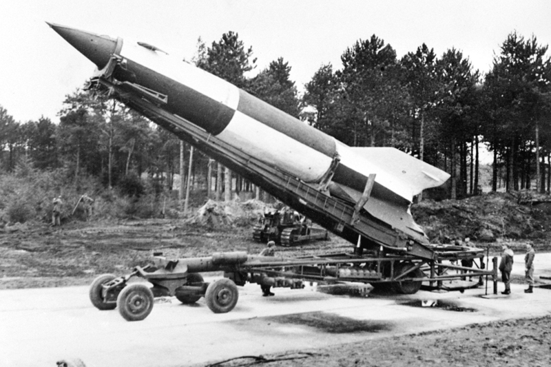
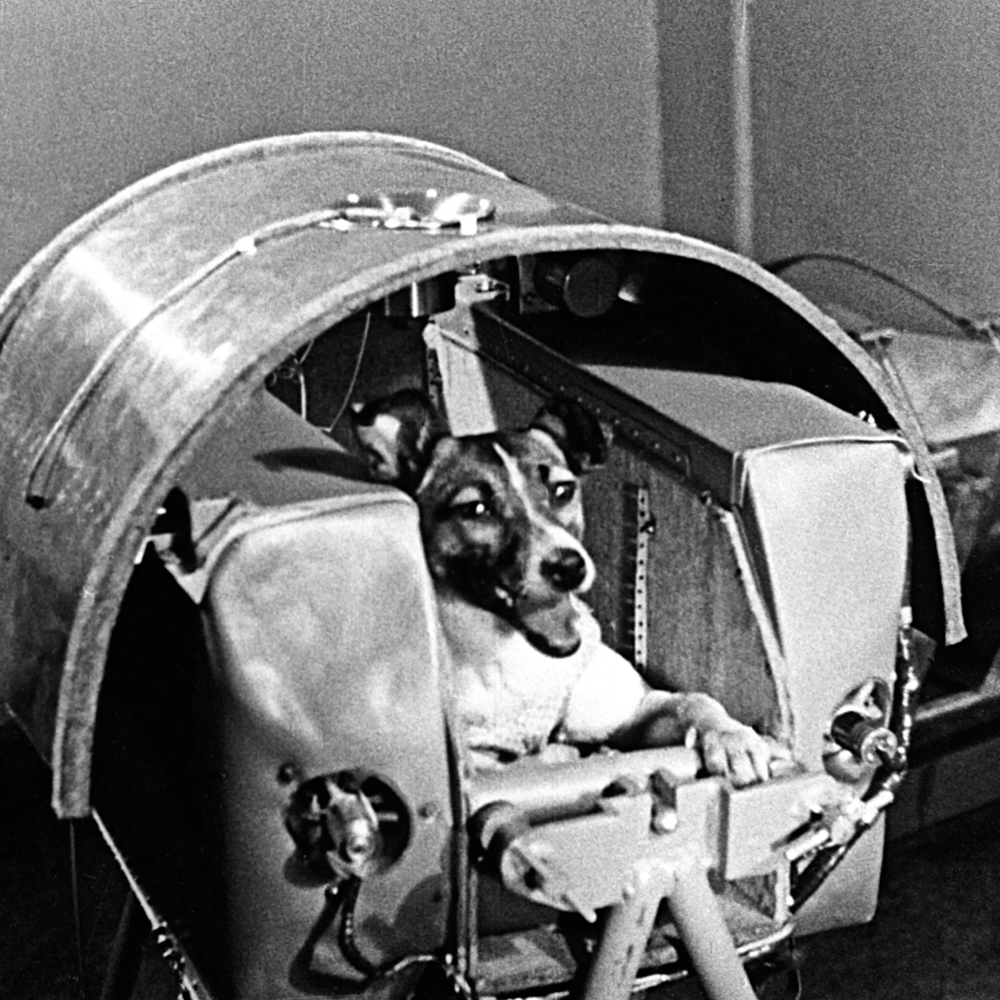
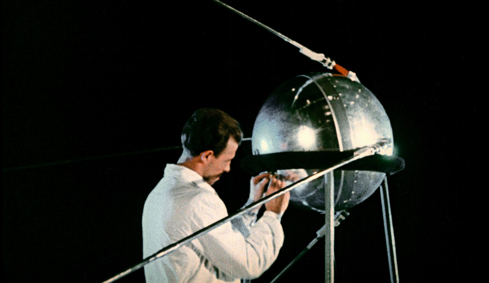

HISTORIA EKSPLORACJI
GŁÓWNA
HISTORIA EKSPLORACJI
GŁÓWNE AGENCJE KOSMICZNE
AKTUALNE MISJE
ZDJĘCIA
WAŻNE KAMIENIE MILOWE
1944
Wystrzelenie rakiety V2 w kosmos

Pierwsze zwierze w kosmosie

1951
1944
Pierwszy sztuczny satelita Ziemi
